I calibrated the camera using ArUco tags from 21 images. The tags were 2cm in size, and I resized all calibration images to 400x300 to match the training image size. The calibration achieved a reprojection error of 0.22 pixels, which is pretty good. The camera matrix shows focal lengths of 530.10 and 204.65 pixels, with the principal point at (201.06, 147.57).
I captured 26 images of a cube object from different angles. Out of these, 19 images had detectable ArUco tags that I could use for pose estimation. The images were originally 3024x4032 pixels, which I resized down to 400x300 for more efficient training.
For each image with a detected ArUco tag, I estimated the camera pose by solving the PnP problem. This gives me the camera-to-world transformation matrix (c2w) for each image. The poses were used to create the training dataset, with 15 images for training, 1 for validation, and 3 for testing.
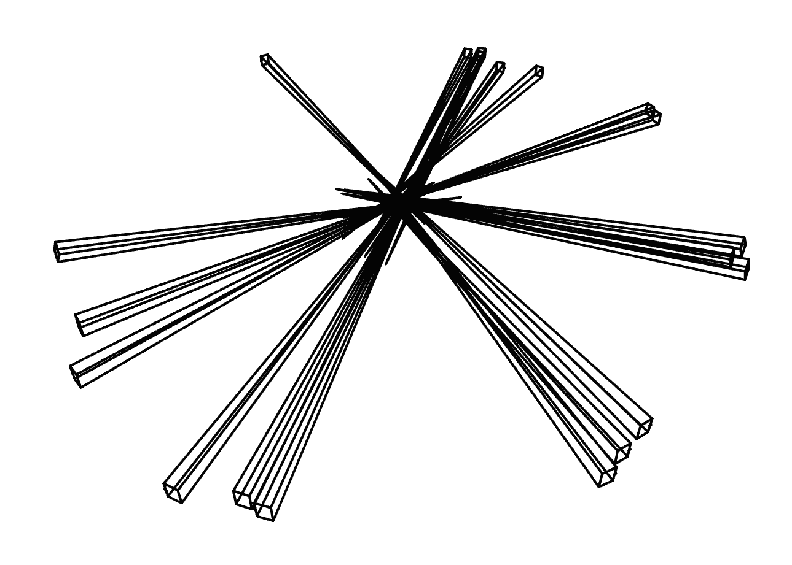
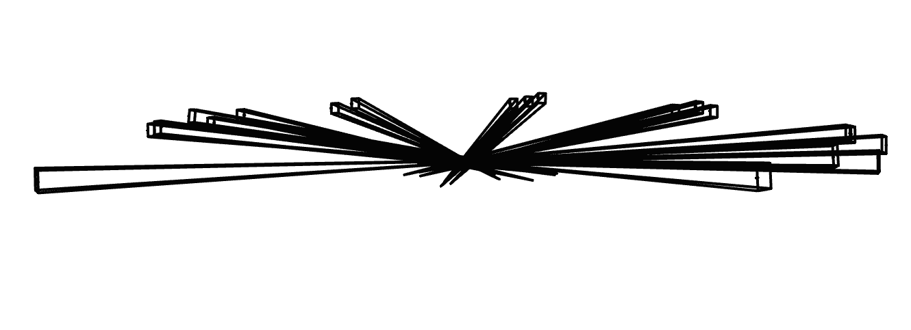
I undistorted all the images using the camera calibration parameters to remove lens distortion. Then I created a dataset in .npz format that includes the training images, validation images, camera poses, and the focal length. The images were cropped to remove black borders after undistortion, resulting in final images of size 299x399 pixels.
The 2D neural field takes normalized pixel coordinates (x, y) in [0, 1] as input. I apply sinusoidal positional encoding with L=10 frequency levels, which expands the 2D coordinates into a 42-dimensional vector. This encoded input goes through a 4-layer MLP with hidden dimension 256 and ReLU activations. The output layer uses a sigmoid to produce RGB values in [0, 1]. The model has about 530,000 parameters total.
I started with the provided test image (fox.png) and trained the model for 2000 iterations using Adam optimizer with learning rate 0.01. The model starts with random noise and gradually learns to reconstruct the image.
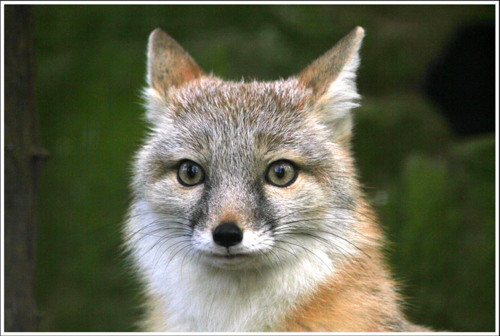
After many iterations, the model learned to reconstruct the image. Here's the training progression:
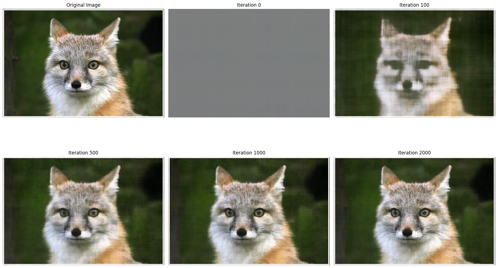
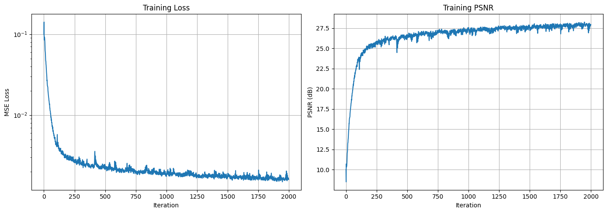
I experimented with different combinations of positional encoding frequency (L) and network width (W). Higher L values allow the model to capture finer details but can lead to overfitting. Wider networks (higher W) have more capacity but train slower. The best results came from balancing these - too low and details are lost, too high and training becomes unstable.
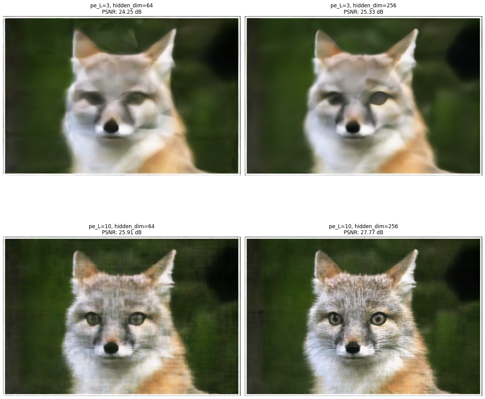
I also trained the model on a custom image. The training process was similar - the model starts from noise and gradually learns to represent the image.
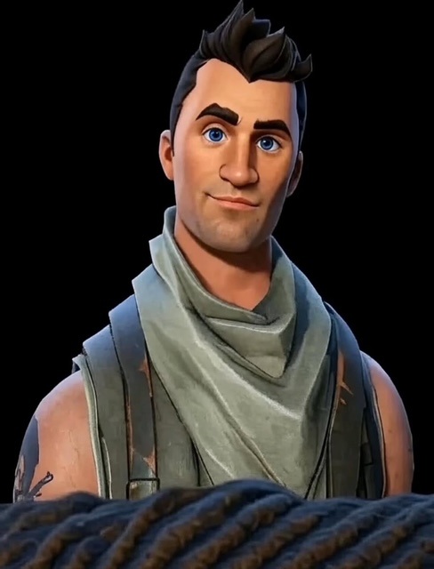
After training, here's the result:
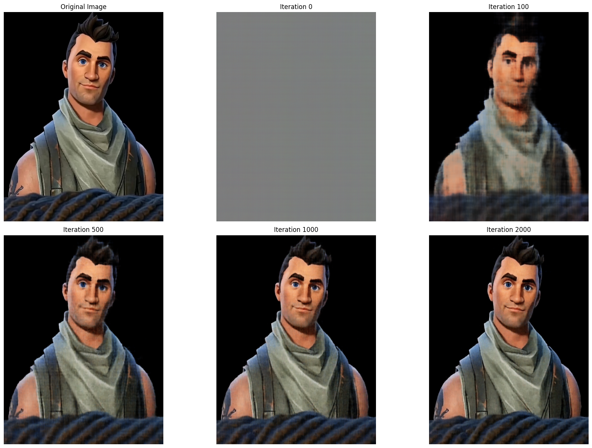
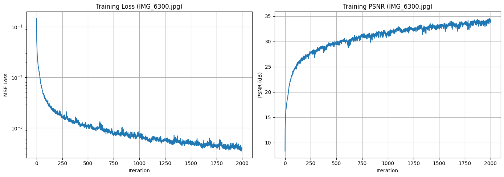
I implemented a full NeRF pipeline. For ray generation, I convert pixel coordinates to 3D rays using the camera intrinsics and poses. I sample points along each ray between near and far planes, then apply positional encoding to the 3D coordinates (L=10) and view directions (L=4). The NeRF model processes these through an 8-layer MLP with skip connections, outputting density and view-dependent color. Volume rendering integrates these samples along each ray using alpha compositing to produce the final pixel color.
The visualization shows the camera positions and frustums for the Lego scene. This helps verify that the camera poses are correct and that the cameras are positioned appropriately around the object.
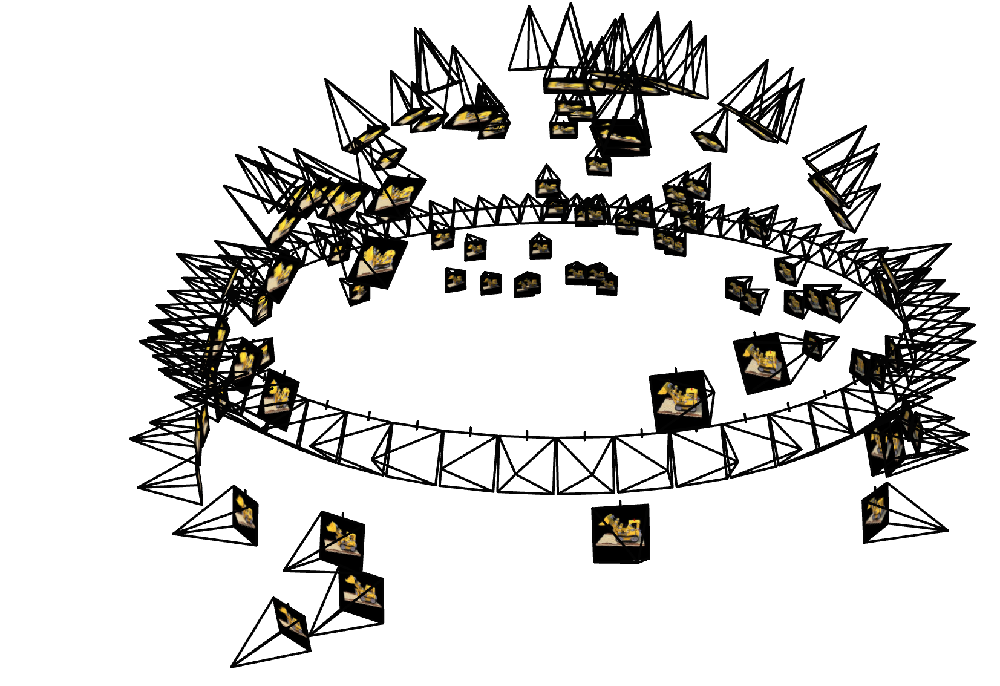
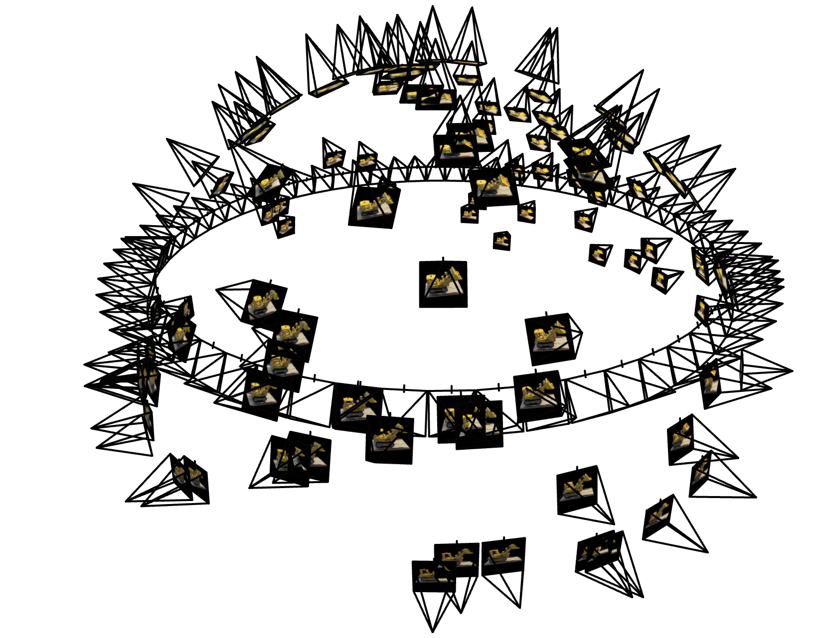
I trained the NeRF for 5000 iterations with a batch size of 4096 rays. The model starts completely random, producing noise. By iteration 1500, you can see the basic shape starting to form. At 3000 iterations, the object structure is visible and details are becoming clearer. The final result shows the model has learned the geometry and appearance with fine details.
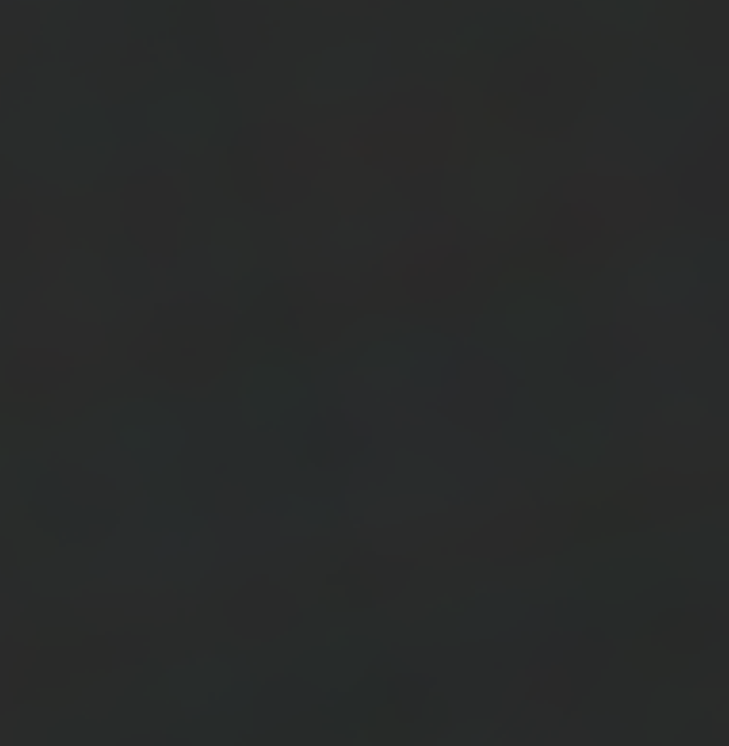
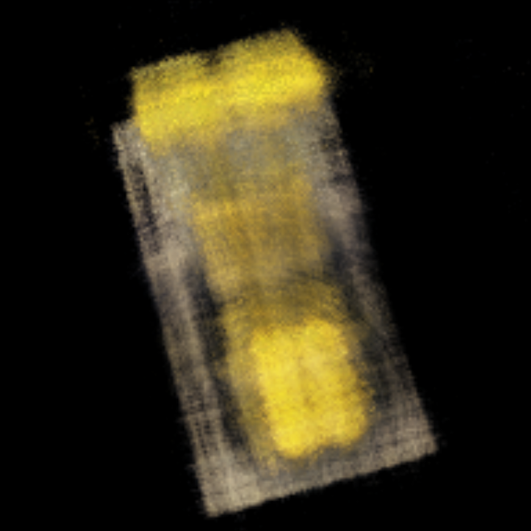
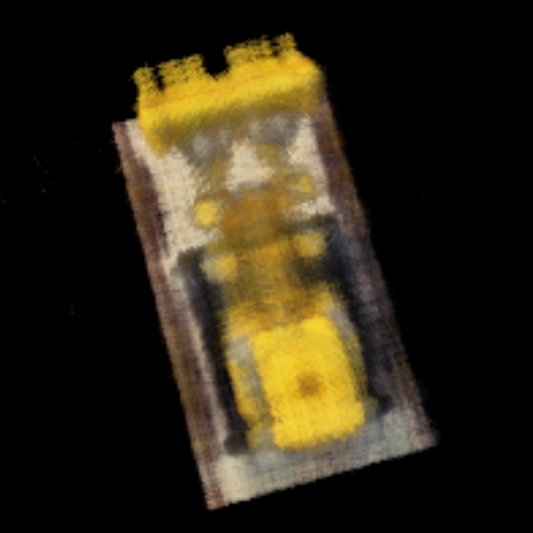
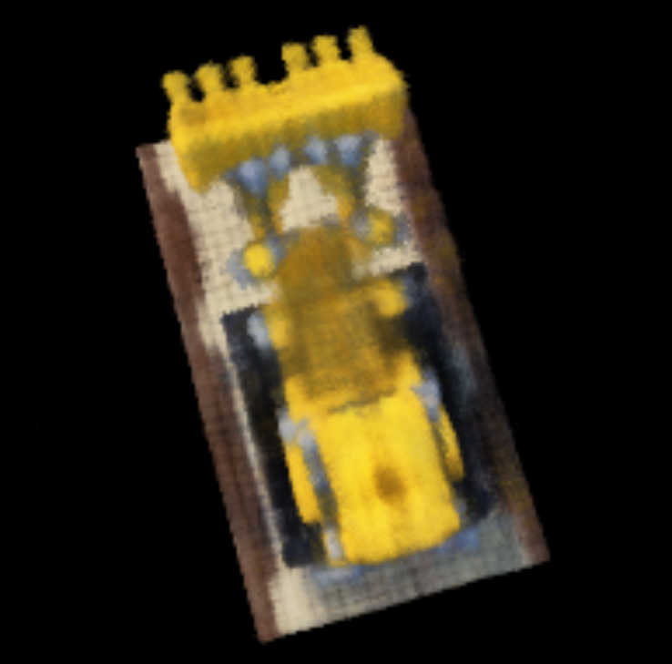
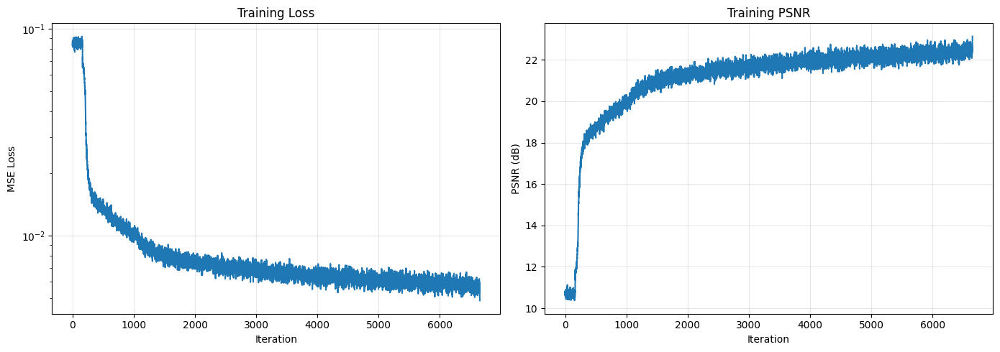
The video shows a novel view synthesis by rendering the scene from a camera path that orbits around the object. This demonstrates that the NeRF has learned a complete 3D representation - it can render the object from angles it was never trained on, with proper view-dependent effects like specular highlights.
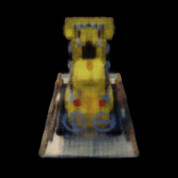
I used my own dataset of 19 images of a cube object, split into 15 training, 1 validation, and 3 test images. The images were resized to 400x300 and undistorted. I used the same NeRF architecture as Part 2, with 8 layers, hidden dimension 256, positional encoding L=10 for coordinates and L=4 for view directions. Training used 64 samples per ray, near/far planes at 0.029/0.737, batch size 4096, and learning rate 5e-4 with Adam optimizer.
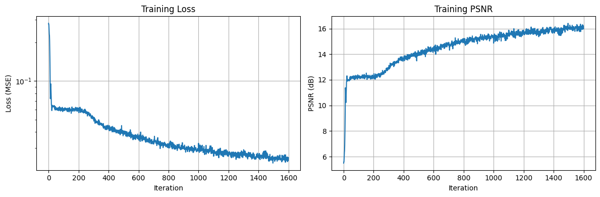
The model struggled to learn the cube, even after 5000 iterations. The renders are very blurry and the colors are not very accurate.
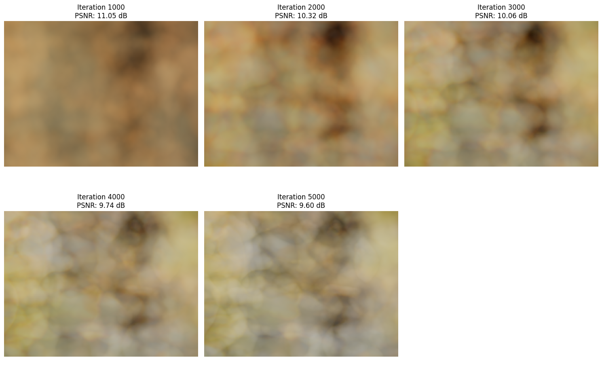
The GIF shows novel view synthesis from the trained NeRF. The camera moves around the object, and the NeRF renders views it was never trained on. This demonstrates that the model has learned a coherent 3D representation of the scene, not just memorized the training views.